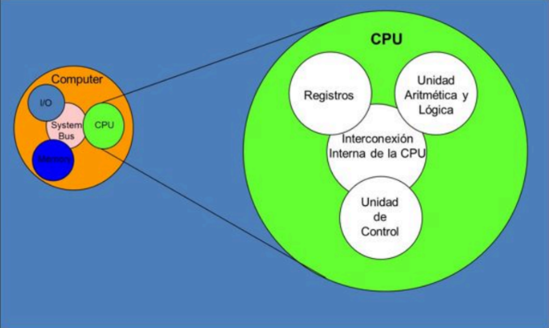
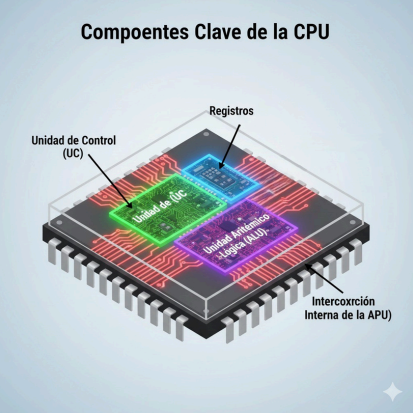
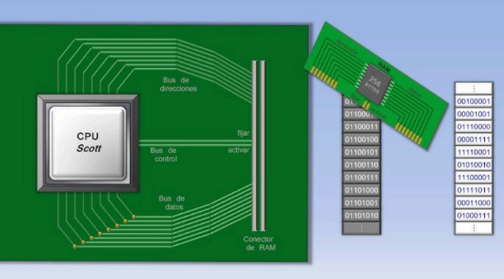
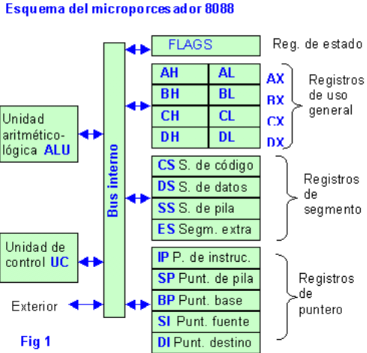
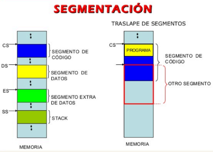

2.1 Organizacion del procesador

Unidad Aritmetica Logica
● Operaciones lógicas. AND, OR, NOT, XOR, NOR, NAND, etc.
● Operaciones aritméticas. Se refiere a la suma y resta de bits. Aunque a veces se usa la multiplicación y la división, aunque son más costosas de realizar.
● Operaciones de desplazamiento de bits. Desplazamiento de las posiciones de los bits en un cierto número de lugares hacia la derecha o hacia la izquierda, lo que se considera como una operación de multiplicación.
Registros
● Registro Contador de Programa (PC): Almacena la dirección de memoria de la siguiente instrucción a ejecutar.
● Registro de Instrucción (IR): Almacena la instrucción a ejecutar.
● Decodificador de Instrucciones (ID): Genera los valores de las señales de control para la ejecución de cada instrucción.
● Reloj: Marca el ritmo al cual se llevan a cabo las operaciones.
Unidad de Control (UC)
● La unidad de control tiene tres funciones principales:
○ Búsqueda de instrucciones: La UC busca las instrucciones almacenadas en la memoria principal de la computadora.
○ Decodificación de instrucciones: Una vez encontradas, la UC interpreta las instrucciones y las convierte en señales comprensibles para el resto de los componentes de la CPU.
○ Ejecución de instrucciones: La UC utiliza la unidad de proceso para llevar a cabo las instrucciones decodificadas y producir los resultados correspondientes.
Interconexion Interna del CPU
Red de comunicación de alta velocidad que permite a las unidades clave del procesador (Unidad de Control, ALU y Registros) intercambiar información de forma coordinada.
1.-Transporte de Datos (Bus de Datos)
● Función: Mueve los valores numéricos y operacionales (los datos) entre los componentes.
2.-Especificacion de Ubicacion (Bus de Direcciones)
● Función: Identifica el origen o el destino exacto de la información dentro del chip.
3.-Sincronización y Mando (Bus de Control)
● Función: Transmite las señales de control que dirigen y temporizan las operaciones de todas las unidades.

2.2 Estructuras de Registros

El conjunto de registros que componen la CPU sirven como una capa de memoria por encima de la memoria principal y la memoria caché.
Los registros de la CPU tienen dos propósitos:
● Registro visible para el usuario.
● Registro de control y estado.
Registros Visibles para el Usuario
Utilizando el uso de registros, el lenguaje de máquina o el programador ensamblador pueden reducir la cantidad de veces que se hace referencia a la memoria principal.
A los registros de proposito general se les asignan las siguientes tareas: Registros de datos: Estos registros solo se pueden utilizar para almacenardatos.
● Punteros de segmento: La dirección de la base de un segmento se almacena en un registro en una CPU que utiliza direccionamiento segmentado. Tanto los modos de direccionamiento de propósito general como los modos de direccionamiento específicos se pueden utilizar con un registro de direcciones.
● Registros de Indice: Estos pueden autoindexarse y se utilizan para el direccionamiento de índices.
● Stack Pointer: Si hay direccionamiento de pila visible para el usuario, entonces típicamente la pila está en la memoria y hay un registro dedicado que apunta a la parte superior de la pila. Esto permite que las instrucciones de empujar, sacar y otras instrucciones de pila no necesitan contener un operando de pila explícito.
● Condition Codes: Estos son parcialmente visibles como tipo de registro. También se les conoce como banderas. Los bits del registro se establecen de acuerdo con el resultado de una operación.
Registros de Control
Los registros de control son ubicaciones de almacenamiento de alta velocidad dentro del procesador que guardan información para el sistema operativo, la unidad de control y el propio sistema, permitiendo gestionar el flujo de instrucciones y las funciones del sistema. Estos registros son esenciales para la estabilidad y seguridad del sistema, almacenando datos de estado y configuración que no suelen ser visibles para los programadores de aplicaciones.
A los registros de proposito general se les asignan las siguientes tareas: Registros de datos: Estos registros solo se pueden utilizar para almacenardatos.
● Punteros de segmento: La dirección de la base de un segmento se almacena en un registro en una CPU que utiliza direccionamiento segmentado. Tanto los modos de direccionamiento de propósito general como los modos de direccionamiento específicos se pueden utilizar con un registro de direcciones.
● Registros de Indice: Estos pueden autoindexarse y se utilizan para el direccionamiento de índices.
● Stack Pointer: Si hay direccionamiento de pila visible para el usuario, entonces típicamente la pila está en la memoria y hay un registro dedicado que apunta a la parte superior de la pila. Esto permite que las instrucciones de empujar, sacar y otras instrucciones de pila no necesitan contener un operando de pila explícito.
● Condition Codes: Estos son parcialmente visibles como tipo de registro. También se les conoce como banderas. Los bits del registro se establecen de acuerdo con el resultado de una operación.
Caracteristicas Principales:
● Controlan y monitorizan la operación de un procesador o de un sistema computarizado.●A menudo, son visibles solo en modo kernel y no directamente para el usuario o programador de aplicaciones.
●Capturan información sobre el estado del procesador y son cruciales para la ejecución de rutinas del sistema operativo.
●Los registros de control se destinan a la configuración y el control.
●Funcionan como una memoria de muy alta velocidad para un acceso rápido a información vital.
Registros de Estado

En Hardware:
Registro de estado / banderas (FLAGS): contiene bits que indican resultados de operaciones.
● Cero: resultado igual a 0.
● Signo: positivo o negativo.
● Acarreo: existencia de carry/borrow.
Desbordamiento: excede la capacidad del registro.
En Sistemas Operativos:
Los registros de estado se relacionan con los "estados de un proceso"
● Nuevo → creado.
● Listo → esperando CPU.
● Ejecución → en curso.
● Finalizado → terminó.
Importancia:
Desbordamiento: excede la capacidad del registro.
● Control del flujo de instrucciones.
● Evita accesos innecesarios a memoria.
● Facilita el diagnóstico y la comprensión del sistema.
2.3 Ciclo de la Instruccion
Ciclo Fetch-Decode-Execute (FDE)
1.-Busqueda(Fetch):● La CPU toma la dirección del **Contador de Programa (PC)
● La guarda en el MAR y trae la instrucción desde memoria al MDR.
● El PC se actualiza a la siguiente instrucción.
2.-Decodificar(Decode):
● La instrucción en el MDR se interpreta.
● La Unidad de Control identifica la operación y operandos.
● Se generan señales de control para ejecutar la orden.
3.-Ejecucion(Execute):
● Se realiza la operación: acceso a memoria, cálculo en la ALU o manejo de E/S.
● El resultado se guarda en el Acumulador u otro registro.
Segmentacion

Segmentación es una técnica de manejo de memoria que divide la memoria en segmentos, cada uno con un tamaño y una función específicos. Cada segmento puede tener diferentes permisos de acceso y tamaños, lo que permite un mejor uso de la memoria. Esta técnica se utiliza para mejorar el rendimiento y la seguridad del sistema.
En la actualidad, la mayoría de las CPUs utilizan un modelo de memoria virtual en el que la segmentación se lleva a cabo de manera transparente al software. Esto significa que el software no tiene que preocuparse por la segmentación y puede acceder a la memoria de manera lineal como si no hubiera segmentación en absoluto.
Características y funciones
Caracteristicas del ciclo de instruccion:
● Secuencial: las fases (búsqueda, decodificación, ejecución) se realizan una tras otra.
● Automatico: la CPU repite el ciclo de forma continua mientras el sistema esté encendido.
● Controlado por la unidad de control: esta coordina las señales y pasos del ciclo.
● Uso de registros clave: PC, MAR, MDR, IR (registro de instrucción), acumulador, entre otros.
● Dependencia de la memoria: requiere traer instrucciones y datos desde la memoria principal.
● Universal: todo procesador lo aplica, aunque con variaciones según la arquitectura.
Funciones del ciclo de instruccion
1.-Obtener instrucciones: traer desde memoria la siguiente orden (fase de fetch).2.-Interpretar instrucciones: identificar la operación y los operandos (fase de decode).
3.- Ejecutar instrucciones: realizar operaciones aritméticas, lógicas, de control o de E/S (fase de execute).
4.- Actualizar el PC: preparar la CPU para la siguiente instrucción.
5.- Mantener la continuidad: asegurar que el flujo de ejecución del programa se cumpla correctamente.
6.-Optimizar recursos: coordinar CPU y memoria para trabajar de forma eficiente.
2.4 Modos de Direccionamiento
Modos de Direccionamiento
Los modos de direccionamiento son las diferentes formas de definir la ubicación de un operando en memoria, para que de esta forma el programa sea capaz de encontrarlo durante el tiempo de ejecución.● Implicito:Se utiliza sin declarar ninguna dirección, ya que las operaciones que lo utilizan ya conocen la dirección en la cual se encuentra el operando que se va a utilizar.
● Inmediato:En este modo se declara directamente el valor del operando en la instrucción.
● Directo:El operando hace referencia a un dato almacenado en la dirección especificada en la instrucción, la cual puede estar escrita de dos formas, como un registro o como una posición en memoria.
● Indirecto:El operando se utiliza como una referencia a un dato que se encuentra almacenado en una posición de memoria, para esto el operando debe especificar un registro entre corchetes, el cual contiene la dirección de memoria a la que se desea acceder.
● Indexado:El operando hace referencia a una posición en memoria, la cual puede ser expresada utilizando un numero el cual es sumado a un registro que funciona como un índice respecto a la dirección de memoria.
● Relativo:En el direccionamiento relativo se declara el operando como el valor de un registro entre corchetes, al cual se le aplica un desplazamiento, es decir, se le suma un valor que indicara el desplazamiento a partir de la dirección indicada por el registro.
2.5 Estudio CPU
Más allá de las mejoras constantes en las arquitecturas físicas de soporte, uno de los mayores desafíos se centra en cómo aprovechar al máximo la potencia de las mismas.
Interesa realizar investigación en la especificación, transformación, optimización y evaluación de algoritmos distribuidos y paralelos. Esto incluye el diseño y desarrollo de sistemas paralelos, la transformación de algoritmos secuenciales en paralelos, y las métricas de evaluación de performance sobre distintas plataformas de soporte (hardware y software).
Lineas de investigacion y desarrollo
● Balance de carga estático y dinámico. Técnicas de balanceo de carga.
● Análisis de los problemas de migración y asignación óptima de procesos y datos a procesadores. Migración dinámica.
● Patrones de diseño de algoritmos paralelos.
● Implementación de soluciones sobre diferentes modelos de arquitectura homogéneas y heterogéneas (multicores, clusters, multiclusters y grid). Ajuste del modelo de software al modelo de hardware, a fin de optimizar el sistema paralelo.
● Laboratorios remotos para el acceso transparente a recursos de cómputo paralelo.